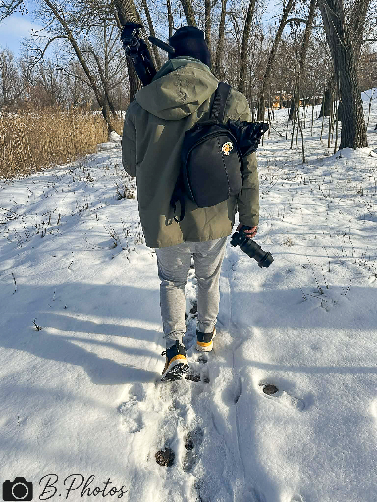
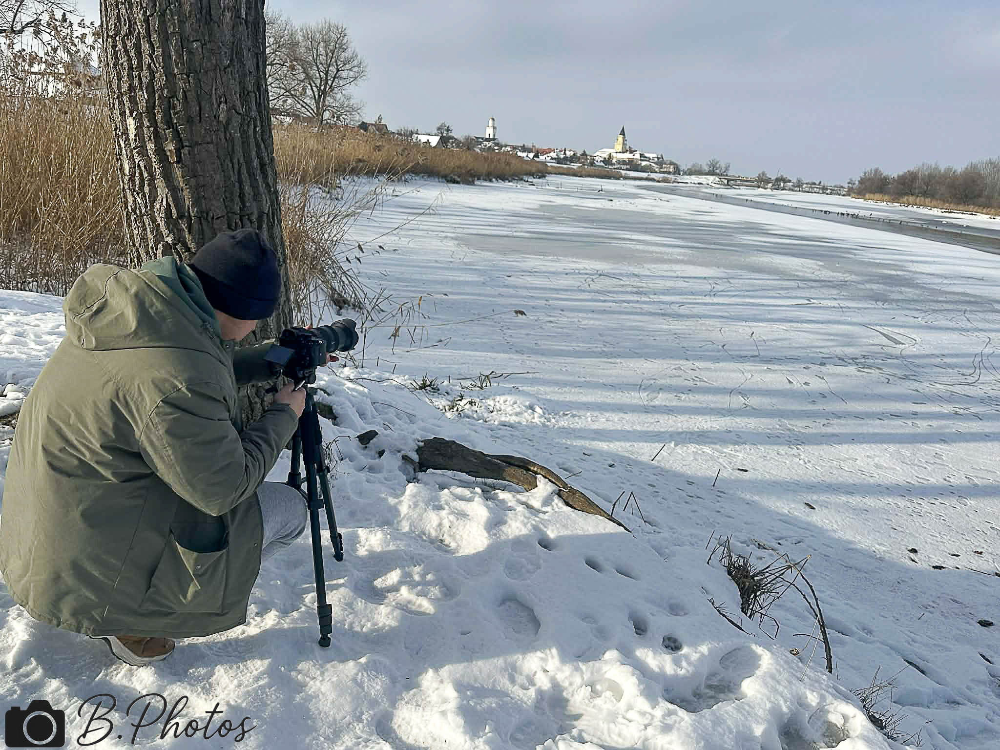

Miért engem válassz?
Az első üzenettől a végső átadásig azon dolgozom, hogy a fotózás ne feszélyezett legyen, hanem jól vezetett, tiszta és használható eredményt adjon.
Prémium fotózás Bécsben
Portré, páros, természet, autós és családi fotózás Bécsben, nyugodt vezetéssel és időtálló végeredménnyel.
Nem erőltetett pózok. Nem futószalag. Átgondolt, prémium végeredmény.
Az első üzenettől a végső átadásig azon dolgozom, hogy a fotózás ne feszélyezett legyen, hanem jól vezetett, tiszta és használható eredményt adjon.
Nem merev pózokat keresünk, hanem olyan képeket, amik valóban rólad szólnak.
Végig vezetlek a folyamaton, hogy a kamera előtt is kényelmesen érezd magad.
A végeredmény ma is erős, és hónapok múlva is vállalható marad.
Szolgáltatások
A fotózás lehet személyes, páros, szabadtéri vagy karakteresebb branding jellegű is. A közös pont mindig az, hogy a képek használhatók és hitelesek maradjanak.
Letisztult, erős portrék profilhoz, brandinghez vagy személyes megjelenéshez.
Portfólió megnyitásaŐszinte közös pillanatok, kényelmetlen pózok nélkül, természetes dinamikával.
Páros munkákPuha fények, szabadtéri hangulat és időtálló képi nyugalom Bécs környékén.
Természetes képekKarakteres, tiszta képek fényre, formára és jelenlétre építve.
Autós portfólióFinom, nyugodt, meleg hangulatú anyag valódi családi közelséggel.
Családi képekCsomagok röviden
A végső irányt mindig a célodhoz igazítjuk, de indulásnak már itt látod, milyen léptékben gondolkodhatsz.
Essence
97 EURGyors, tiszta portré vagy rövidebb sorozat egy helyszínen.
Signature
167 EURA legjobb egyensúly, ha többféle kép, több hangulat vagy erősebb online jelenlét kell.
Prestige
219 EURHosszabb, kreatívabb anyag prémium megjelenéshez, kampányhoz vagy tudatos brandhez.
Rólam
Sandor Busi vagyok, a B. Photography mögött. Olyan képeket készítek, amelyek személyesek maradnak, mégis prémium és tudatos benyomást keltenek.
Nyugodt légkörben dolgozom, nem erőltetett pózokkal. A cél mindig az, hogy a képek használhatók, hitelesek és hosszú távon is erősek legyenek.


Visszajelzések
Anna★★★★★„Nyugodt volt az egész folyamat, a képek pedig pontosan azt adták vissza, amit szerettünk volna.”
Martin★★★★★„Nem sablonpózok lettek, hanem erős, használható képek. Végig biztos kézben éreztem magam.”
Lili★★★★★„Gyors visszajelzés, pontos egyeztetés és tiszta végeredmény. Pont ilyen élményt kerestem.”
Következő lépés
Írj röviden vagy indíts foglalási kérést. Átnézem, mire van szükséged, és 24 órán belül visszajelzek a következő lépéssel.